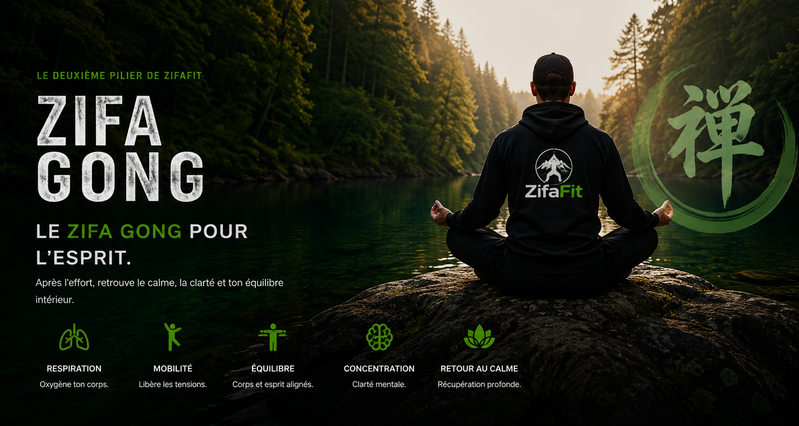

Zifa Fit
Le côté entraînement de la méthode : force, endurance, mobilité et progression grâce à des séances fonctionnelles accessibles.
Collection actuelle Fondation D’autres collections viendront s’ajouter avec le temps.
APRÈS L’EFFORT, RETROUVER LE CALME
Le Zifa Gong est le deuxième pilier de la méthode ZifaFit. Il se pratique après l’entraînement, lorsque le corps a besoin de ralentir progressivement plutôt que de passer directement de l’effort au repos.
Les mouvements sont lents, accessibles et guidés par la respiration. Ils aident à délier le corps, à relâcher les tensions accumulées et à ramener l’attention vers ce que l’on ressent ici et maintenant.
La pratique peut se faire debout ou assis, à l’intérieur comme dans la nature. Elle ne demande ni performance, ni souplesse particulière, ni longue routine à mémoriser. Chacun avance à son rythme et adapte l’amplitude des mouvements à ses capacités.
Le but n’est pas d’en faire plus. Le but est de mieux terminer la séance.
En réunissant mouvement, respiration et concentration, le Zifa Gong crée une transition cohérente entre l’entraînement physique et le retour aux activités quotidiennes.
Tu entraînes le corps avec Zifa Fit. Tu l’aides ensuite à retrouver son équilibre avec le Zifa Gong.
COMMENT L’UTILISER
QUE SIGNIFIE ZIFAFIT?
Le côté entraînement de la méthode : force, endurance, mobilité et progression grâce à des séances fonctionnelles accessibles.
Collection actuelle Fondation D’autres collections viendront s’ajouter avec le temps.Le côté respiration et récupération : ralentir, relâcher les tensions, améliorer la concentration et retrouver son calme après l’effort.
Pratiques actuelles Debout et assis Chaque collection Zifa Fit est complétée par le Zifa Gong.ZifaFit réunit le mouvement du corps et le calme de l’esprit dans une seule méthode simple et accessible.
CE QUE LE ZIFA GONG TRAVAILLE
Améliore la capacité respiratoire et oxygène le corps.
Augmente la souplesse et la fluidité des mouvements.
Renforce l’équilibre physique et l’ancrage.
Clarifie l’esprit et développe la pleine présence.
Réduit le stress et favorise la récupération.
INCLUSES DANS ZIFA FIT — COLLECTION FOUNDATION
Les cartes Debout et Assis sont incluses avec la collection Fondation et ne sont pas vendues séparément.


Elles accompagnent le deck Fondation afin de compléter l’entraînement par une vraie phase de respiration et de récupération.
Voir Zifa Fit — FondationPROCHAINES SÉANCES
Reçois les prochaines vidéos, séances et nouvelles du projet ZifaFit.
Le Zifa Gong n’est pas une performance. C’est un retour à l’essentiel.
Respire. Ralentis. Reviens à toi.